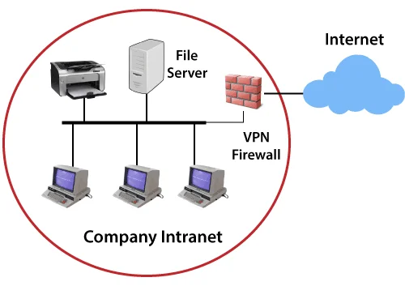
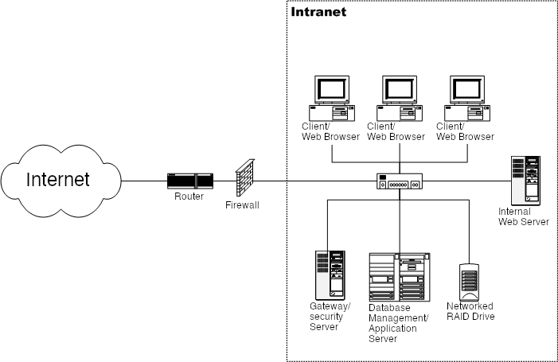

Home ｜
World Wide Web｜
TCP/IP｜
Web Browsers｜
Web Servers｜
Uniform Resource Locator｜
Domain Name Server｜
Hypertext Transfer Protocol｜
Intranet｜
Extranet｜
File Transfer Protocol｜
Hypertext Mark-up Language｜
Web 1.0｜
Web 2.0｜
Web 3.0｜
Web 4.0｜
Intranet
An intranet is a private network used within an organization such as a school, company, or institution.
It is only accessible to authorized users within the organization and is used to share internal information.
Intranets help organizations improve communication, store important documents, and allow employees or students to access shared resources securely.
It is faster, more secure, and more controlled compared to the public internet because it is restricted to internal users only.


*Key Points*
- Used within a private organization (school, company, institution)
- Accessible only to authorized users
- Improves internal communication
- Allows secure sharing of files and documents
- Helps in storing and managing organization data
- Faster and more secure than the public internet
- Reduces external access risks
- Supports teamwork and collaboration